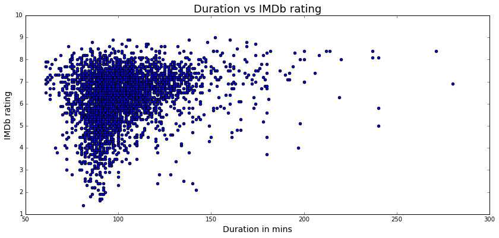

IMDb is the world's biggest online movie database, launched back in 1990. According to Wikipedia1 IMDb contains more than 3.9 million movie/tv-show titles and 7.4 million personalities. With this data we will try to uncover some patterns and relationships between the best critically acclaimed and highest grossing movies of all time. We will use techniques from the world of network-, text- and data analysis to accomplish this. Although IMDb has millions of titles for us to play around with we don't have the computing power/time to go through all that data. So instead we are going to use a little less data - a little over 4000 titles with all the relevant attributes such as cast, director, year, budget, domestic gross, genres, etc. We also gathered ~1200 moviescripts for text analysis, so we can look at patterns within those. The movies are from different decades, but they are mainly from the late 90's to recent years.
Should you be interested in working with our datasets or just get a more detailed explanation, then please see the Download Dataset section in the end.
Let's begin exploring our datasets ..
One important feature of IMDb's database is the IMDb rating, which is a numeric scale from 1-10 used to judge the quality of the movie. The higher the rating, the better the movie and all ratings are generated from voting by registered users of the site. As we mentioned we have the IMDb rating in our dataset, so we can see the distribution of the IMDb ratings and see that they are uniformally distributed. The average of all the IMDb ratings is 6.3.
Most people would preferrably watch movies with rating of 7 or above. As many people check the rating af a movie before they decide to watch it, the IMDb rating actually has quite some influence as to what movies are watched and which that are not. The ratings are regulated through the votes by numerous different users, and eventhough you don't know who actually voted the movie, the number of voters usually make the rating quite trustworthy as well as balance the rating.
Lets look a some more data ... as anyone could go to IMDb's website and look up the individual movie ratings, it would be more interesting how the actors are rated. For all the movies an actor/actress has been part of, we will average their rating and plot it. We will restrict the plot to the 10 best and 10 worst actors who's been part of more than 10 movies. This gives us the following, where we can see some familiar names.
 So it seems that some actors actually receive great ratings througout a lot of movies. Choosing the high-rated actors for a movie will therefore probably give your movie a good rating. We will discuss this topic in depth later on when we compare the director of the movie with the actors to see how the director influences the rating and what correlation there is between a directors rating and the rating of his cast.
So it seems that some actors actually receive great ratings througout a lot of movies. Choosing the high-rated actors for a movie will therefore probably give your movie a good rating. We will discuss this topic in depth later on when we compare the director of the movie with the actors to see how the director influences the rating and what correlation there is between a directors rating and the rating of his cast.
Of course this does reflect the rating of the movie as a whole more than the individual actor's performance in it. But it would not be unfair to assume that a movie's rating depends on the performance of the lead actor/actress - so the ratings are usable.
A key attribute to a successfull movie is of course how much money it makes. Some would say this is the main reason for why some movies are produced. One hypothesis could be that the better rated a movie is, the more money it must have brought in, because who doesn't want to watch a good movie? So let's see if there's is a relation between the rating and gross of a movie.
There is a small correlation here. No movie grossing more than 400 mil. $ has a rating less than 6, which is average. However a lot of movies has grossed less than 100 million dollars and gained ratings above 8. This could have to do with the fact that the gross is domestic and not international. So if a very good movie is produced in a "small" country it may not have grossed as much as it would've in America for example.
There's a lot of different genres in the movie world and there's bound to be some interesting connections to the films. First let's see how the most appreciated genres of movie world compares to how much the genres gross worldwide.

From comparing the two plots we can make some interesting discoveries. E.g. Film-noir which has the highest average IMDb score is actually the film genre with the lowest gross. But in the case of our dataset this is probably just an anomaly as it doesn't make sense that whole genre of Film-Noir hasn't grossed a single dollar.
To get a clearer view on whether there is a correlation between the gross and rating we have plotted the average rating versus the average gross for each genre in a scatter plot and with a linear fit.
 The correlation coefficient for the two averages is actually -0.523!
So if you want to earn millions of dollars you should not expect to also receive a high IMDb rating. This a bit surprising and tells us that the correlation between a movie's rating and its' gross is actually negative. The IMDb rating is thereby not the only indicator as to whether your movie is successful or not.
The correlation coefficient for the two averages is actually -0.523!
So if you want to earn millions of dollars you should not expect to also receive a high IMDb rating. This a bit surprising and tells us that the correlation between a movie's rating and its' gross is actually negative. The IMDb rating is thereby not the only indicator as to whether your movie is successful or not.
Let's now look at how all these movies actually are connected. We have created a network of movies where two movies are connected if one or more actors appear in the both movies. By plotting the network we get what is shown as a graph below.
If we extract only the movies in the big cluster in middle of this graph, we can eliminate the movies that have no connection with all other movies. Now the graph looks like this.
 As we can see from this graph, most movies are clustered around the middle of the graph which tells us that a large amount of the movies in this network are highly connected. Thus many movies have some of the same actors, and only a small amount of movies connect to few other movies, meaning that the actors in those movies do not appear in other movies. This could be due to the fact that some movies have only few actors and that those are relatively unknown or perhaps chosen specifically for one movie.
As we can see from this graph, most movies are clustered around the middle of the graph which tells us that a large amount of the movies in this network are highly connected. Thus many movies have some of the same actors, and only a small amount of movies connect to few other movies, meaning that the actors in those movies do not appear in other movies. This could be due to the fact that some movies have only few actors and that those are relatively unknown or perhaps chosen specifically for one movie.
Analysing this network, we see that the distribution of degrees (number of movies one movie is connected to) follows a powerlaw. Therefore we can conclude that our network is scale free. Hence our network consist of a few movies with a lot of connections, so-called hubs, and then most of the movies having few connections. Here the distribution is plotted on a log-scale.
Betweenness
Betweeness centrality score of a node represents how many times a node acted as a bridge between two other node in a shortest path2. For our network this means that a high scoring node, like the Transformers movie, has a lot of actors whom are also in many other films. So this tells us that the movies on the list belows either has some very famous/very productive actors or simply a lot of actors in the form of small roles and extras.
Eigenvector
As eigenvector centrality denotes the influence of a node in a network3, it is very likely that the top movies in regards to betweenness centrality also tops this chart. We can see below that the top two movies are the same for betweenness and eigenvector, which means that they are probably connected somehow.

To identify communities in this network we have used the Louvain community detection algorithm which identifies communities in a graph, communities being movies that are all closely connected with each other but not so much with other communities. This algorithm found 13 communties in our network. One interesting aspect of this is to discover whether these communties actually correspond to the genres of the movies. We have plotted how much one community consists of the same genre.
Each node color in the graph represents a community - so it's easy to see that for example the cyan colored nodes is a pretty private community. For each community we have plottet the genres in that community as a pie chart. (Note: the node colors in the graph does not correspond to the color of the genres below)

As you can see, most communities in our network consist of multiple genres which tells us that generally speaking actors do not tend to be one-sided considering the film genres they are in. From the plot we find that documentaries tend to use the same group of actors as they represent more than 3/4 of one of the communities. So this 1 community seems to stand out. Eventhough there are some differences between the other 11 communities they are quite representative of the amount of movies in each genre in total. E.g comedy, drama and action take up big chunks for every community those genres being the largest. These discoveries lead to the conclusion that most movies have quite versatile actors who appear in a lot of different movie genres.
Let's see what we can make of the different directors in the set. Let's first find the best and worst directors ... again we will set a requirement in the form that they should've directed at least 5 movies. On the two lists we see some familiar names, Christopher Nolan, Quetin Tarantino, James Cameron - all great directors. But are these directors just so good at their profession that they could produce a brilliant movie with any cast? Let's look at which actors the best director, Christopher Nolan, and the worst director, Brian Levant, uses the most and what their IMDb ratings are.

The blue dots are how many times an actor has been in the particular directors movies, and the red dots are the actors IMDb rating. It seems that Nolan are fond of particular actors such as Michael Caine 6 appearences, Russ Fega 5 appearences and Cillian Murphy & Christian Bale, 4 appearences - whereas Levant has only used one actor 3 times, Harvey Korman. When looking at the average IMDb rating for the actors on the righthand side of the graph, it seems that there is some sort of relation.
So let's put all directors and the average IMDb rating of their favorite cast (min. 2 appearences) and see if this holds.
 It appears that there is a high positive linear correlation! - some due to the fact that the actors obviously are in some of the same movies as the directors.
It appears that there is a high positive linear correlation! - some due to the fact that the actors obviously are in some of the same movies as the directors.
There is only a small positive linear correlation between the duration of a movie and its rating. No real tendency but longer movies have a small advantage.. 
When it comes to the movie's gross vs. its duration, it doesn't reveal anything interesting either.
Note that there a quite a few points that are above 300 mins (5 hrs), which means that there must have been something wrong with the data or it's a TV-series instead of a movie.
We've looked quite a bit on how different attributes relate in our network of movies/actors. Let's now look at some manuscripts. Using a technique called Term Frequency - Inverse Document Frequency, or TF-IDF, we can figure how important a word in a script is for our total collection of scripts. So by doing this we can find the words that are most important for each genre of movies in our dataset.


For the different genres the words seem to fit in pretty well.
As mentioned in the introduction, we have about ~1200 scripts and ~5000 movies in our dataset. This means that we don't have a manuscript for each movie in our dataset, which leads to a margin of error in the above wordclouds. For example, raspberries may not be as important a term in the whole genre of romance films, as it is for the genre in our dataset.
Let us look at the sentiment of the scripts we have. Using the LabMT wordlist4, which provides a sentiment score for a lot of english words, we can figure out how positive/negative a script is. A low score like 5000 is pretty negative for a movie script, while a score like 100,000 i a very positive script.
Having calculated the sentiment of the scripts we can see if it relates in any way to the success of a movie. For example, let's see if there is a connection between the sentiment and the IMDb rating of a movie ..
On the plot we can see that there is very little, if any, correlation between a movie's IMDb rating and the sentiment of the movie's script. This does make sense as a lot of very well liked movies are drama and action movie's which tend to be more intense in the language than other movies.
Instead of only looking at movies let's look at actors. Some actor's are more featured in one genre than others, so let's see if there is a relation between a actors sentiment and their IMDb rating. We will calculate the actor's sentiment as an average of the sentiments of the scripts for the movies he has been in. We will be looking at actors who has been in more than 5 movie's, so there is some data to work with.
One this bar graph we see some familiar names, who we might associate with being good actors, suchs as Robert De Niro and Joseph Gordon-Levitt.
If we correlate their sentiment to their IMDb rating we get this:

Again, it does not seem that the sentiment of the scripts has much to do with the rating of the actor. This does make sense as some of the most proclaimed actors in the world are very versatile when it comes to genres. Tom Hanks, Rober De Niro and Brad Pitt all star in various genres and are renowned actors.
So our dataset mainly comprises of this zip file (direct link) of various .pickles files and the Kaggle set.
However we also used IMDbPY so please install that package as well if you intend to work with our code.
See our Explainer Notebook here.
Wikipedia about IMDb: https://en.wikipedia.org/wiki/IMDb ↩
Betweenness centrality wiki: https://en.wikipedia.org/wiki/Centrality#Betweenness_centrality ↩
Eigenvector centrality wiki: https://en.wikipedia.org/wiki/Eigenvector_centrality ↩
Wordlist article: http://journals.plos.org/plosone/article?id=10.1371/journal.pone.0026752 ↩